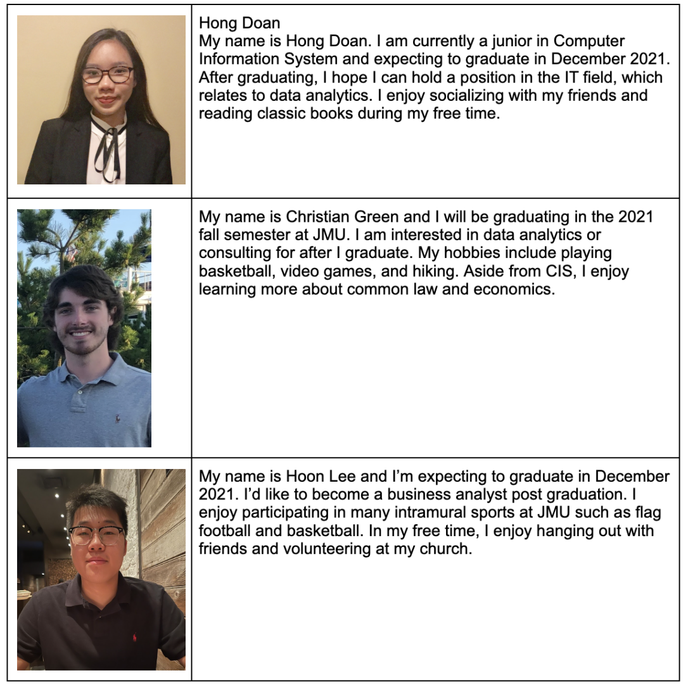

Dukes Solutions
Team Members



SMAD and CIS teams will need work together to deliver a product that fits the client and users’ needs. The scope of work for SMAD will include: User Research, Personas, User Stories, Branding, Wireframes, Low-Mid Fidelity Mockups and the final Bootstrap 5 compatible site. The scope of work for CIS will include: developing a system using MS SQL Server and .Net, having the final system hosted on Amazon instance, providing time and cost estimates and implementing other technical functionalities. The team will deliver these through sprints, which will take place roughly every two weeks until the final deliverable.
Each member of the team has each other's phone numbers and emails. Communication between the team and the professors will be done by the Project Manager and communication with the client will be done by the client liaison. Methods used to communicate will include: emails and in person visits. Dukes Solutions communicates as a team through GroupMe and Zoom.


Date:10/1/21
Time: 1:30pm-2:00pm
Location: Zoom
Overview:This was the first meeting held between SMAD and CIS team members. This was the first opportunity for the two departments to introduce themselves and interact with one another. In this meeting, we were able to ask each other questions we had regarding each other’s tasks and were able to delegate tasks out to the two departments and their team members.
Date:10/3/21
Time: 1:30pm-2:00pm
Location: Zoom
Overview:A dry run of team introductions was filmed over Zoom during this meeting. Team members were able to catch each other up in the progress they had made for the Sprint 1 Deliverables assignment.
Date:10/4/21
Time: 9:00pm-9:30pm
Location: Zoom
Overview:In this meeting, the team was able to narrow down the remaining tasks that needed to be completed and worked on finishing them.
Group Name changed to "Dukes Solutions" and is not "COB Solutions".